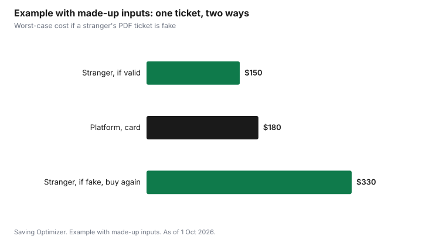

Entertainment · Canada
Buying Resale Tickets in Canada Without Getting Scammed

Buying resale tickets in Canada is safe enough when you use the official ticketing platform or a resale platform that guarantees the ticket, pay by credit card, and receive the ticket as a transfer in the official ticketing account rather than as a screenshot or PDF. Ontario's Ticket Sales Act gives buyers the strongest protection in the country: as of 1 Oct 2026 it is illegal to resell a ticket to an Ontario event for more than the original total price, and a resale buyer must receive a written money-back guarantee or proof from the primary seller that the ticket is valid. Never pay a stranger by e-transfer, gift card or cryptocurrency. Canadians reported more than $704 million in fraud losses in 2025, according to the Canadian Anti-Fraud Centre, and ticket scams are a familiar part of that.
Key takeaways
- Use the official ticket seller's resale exchange or a platform that guarantees tickets. Avoid private sales from strangers on social media.
- Pay by credit card, which gives you a chargeback option. Never pay by e-transfer, wire, gift card or cryptocurrency.
- Take delivery as a transfer in the official ticketing account. A screenshot or PDF can be sold many times.
- Ontario: resale capped at the original total price plus taxes and the platform's standard fees; listing must show the original price; written money-back guarantee or proof of validity.
- Report scams to the Canadian Anti-Fraud Centre at 1-888-495-8501 or online, and to your card issuer and local police.
- Example with made-up inputs: paying $180 by card on a guaranteed platform beats paying $150 by e-transfer to a stranger.
How ticket scams work
Ticket scams follow a few patterns, and most rely on the buyer paying in a way that cannot be reversed. The Competition Bureau, the RCMP and banks describe the same warning signs.
| Scam | How it works | How to avoid it |
|---|---|---|
| Fake tickets | A screenshot, PDF or barcode that is fake or already used | Accept tickets only as a transfer in the official ticketing account |
| Duplicate tickets | One real ticket sold to several buyers | Same: a transfer moves the ticket so it cannot be sold twice |
| Tickets that do not exist | Seller takes payment and disappears | Pay by credit card on a guaranteed platform; never by e-transfer |
| Look-alike websites | A site that copies an official seller's name and design | Start from the venue's or artist's official site; read the URL |
| Social media offers | A hacked or fake account offers tickets to a sold-out show | Do not buy from strangers in comments or messages |
| Urgency pressure | 'Only one left' or a countdown timer to rush you | Slow down; real deals survive a few minutes of checking |
Where to buy
The safest resale source is the official ticket seller's own resale or fan-to-fan exchange, because the ticket is reissued to you in the same system. The next safest is a resale platform that guarantees tickets and refunds you if a ticket does not get you in. Private sales from strangers, whether on social media, classified sites or at the venue door, carry the most risk.
Before buying on any platform, confirm the event details on the venue's official site: the date, time, venue and whether the event is sold out. Some resale listings appear before tickets are even released, which means the seller does not have them yet.
Ontario's rules
Ontario's Ticket Sales Act, 2017 applies to tickets for sporting, recreational and cultural events in Ontario, regardless of where the seller is based. According to the Ontario government's page, updated 4 June 2026:
- It is illegal to resell a ticket, or help resell it, for more than the original total price paid to the primary seller. A resale buyer pays no more than that total, plus applicable taxes and the resale platform's standard service fees.
- Resale listings must show the original total price, an itemized list of fees, charges and taxes, and the total resale price.
- It is illegal to offer a ticket for sale that the seller does not possess or control.
- A buyer from a secondary seller or platform must receive a written money-back guarantee, covering situations such as a ticket that does not grant admission or an event cancelled before the ticket can be used, or written proof from the primary seller that the ticket is valid.
- Resellers must show their name, location and contact information, unless the platform provides a money-back guarantee.
- Ticket bots are banned. Individuals convicted can face penalties up to $50,000 or up to two years less a day in prison; corporations up to $250,000.
- The Act does not apply to events at schools, municipally or community-owned buildings, or places of worship, and the resale cap does not apply to resales for a registered charity's benefit.
Complaints about ticket sales in Ontario go to Consumer Protection Ontario.
Quebec and other provinces
In Quebec, the Office de la protection du consommateur (OPC) says, as of 1 Oct 2026, that a reseller may not offer a ticket above the official box office price unless it has written authorization from the show's producer and presenter. New resale obligations took effect on 12 September 2026, according to the OPC's 10 September news release. Before you buy, a Quebec reseller, including a resale website or app, must tell you that the ticket is a resale, name the official box office and say tickets may still be available there, give the official box office price and, if the resale price is higher, the maximum resale price the producer authorized, identify the seat, give the last owner's name, and break down the total into the ticket's face value and every fee. It must also tell you that you will be refunded if the event is cancelled, you are refused entry, or the event, seat or ticket value is not as described. The OPC handles complaints. Other provinces rely mainly on general consumer protection and fraud law, which makes the platform and payment method more important.
Pay the safe way
| Payment method | Protection | Use it? |
|---|---|---|
| Credit card on a guaranteed platform | Platform guarantee plus a possible chargeback through your card issuer | Yes |
| Credit card to a private seller | Possible chargeback, but harder to prove | Only with care |
| Debit card or PayPal goods and services | Some dispute options, depending on the provider | With care |
| Interac e-transfer to a stranger | Very hard to reverse | No |
| Gift cards, wire transfer, cryptocurrency | Almost impossible to recover | Never |
A checklist before you pay
- Confirm the event, date and venue on the official site.
- Use the official exchange or a platform that guarantees tickets.
- Read the listing: section, row, seat, restrictions, and in Ontario, the original total price.
- Compare the total at checkout with face value. In Ontario, a resale total above the original price plus taxes and platform fees is not allowed.
- Pay by credit card.
- Insist on transfer in the official ticketing account. Accept the transfer as soon as it arrives.
- Keep screenshots of the listing, messages and receipt.
If you have been scammed
Act quickly. Contact your card issuer or bank to dispute the charge. Report the scam to the platform if you used one. Report it to the Canadian Anti-Fraud Centre online through the national cybercrime and fraud reporting system or by phone at 1-888-495-8501, and to your local police. In Ontario, report a seller who broke the Ticket Sales Act to Consumer Protection Ontario. Reports help even if you do not get your money back.
Example with made-up inputs: two ways to buy one ticket
These numbers are an example with made-up inputs. They are not real ticket prices. A fan finds a sold-out show. A stranger on social media offers a ticket for $150 by e-transfer, delivered as a PDF. A guaranteed resale platform lists a similar seat at $180 including fees, paid by credit card and transferred in the official app.
If the stranger's ticket is fake, which is common for PDFs sold to many buyers, the fan loses $150 and still has no ticket; buying the platform ticket at that point brings the total to $330. If the platform ticket fails, the platform's guarantee and the card's chargeback route give the fan a way to get the $180 back.
| Outcome | Stranger, e-transfer, PDF | Platform, credit card, app transfer |
|---|---|---|
| Ticket is valid | $150 | $180 |
| Ticket is fake, then buy again on a platform | $330 | Refund route; $0 net if refunded |

Common mistakes
- Paying a stranger by e-transfer because the price is lower.
- Accepting a screenshot or PDF instead of an app transfer.
- Buying from a look-alike site that ranked first in search results.
- Buying before tickets have been released, from someone who cannot have them yet.
- Not reporting a scam because the amount seems small.
For how fees are shown and what the law requires, see concert ticket fees and drip pricing.
Sources
- Government of Ontario, Buying tickets to events in Ontario, ontario.ca, updated 4 Jun 2026; Ticket Sales Act, 2017. Resale cap, listing disclosures, possession rule, money-back guarantee, reseller identity, bot penalties and exemptions.
- Office de la protection du consommateur (Quebec), Achat de billets auprès d'un revendeur (opc.gouv.qc.ca, last modified 14 Sep 2026) and news release Revente de billets et abonnements (10 Sep 2026), as of 1 Oct 2026.
- Competition Bureau, Protect yourself from online ticket fraud, and Ticket buyers: Beware of deceptive marketing tactics, 20 May 2026.
- Canadian Anti-Fraud Centre, reporting system and phone line 1-888-495-8501, as of 1 Oct 2026; money.ca, Canada's worst fraud year on record, reporting more than $704 million in reported 2025 losses.
- RCMP, warning on themed ticket frauds, March 2026.
- The two purchases, prices and outcomes in the example table and chart are an example with made-up inputs.
Frequently asked questions
Is it legal to resell tickets above face value in Ontario?
No. As of 1 Oct 2026, Ontario's Ticket Sales Act makes it illegal to resell a ticket to an Ontario event, or help resell it, for more than the original total price paid to the primary seller. A buyer pays no more than that total plus applicable taxes and the resale platform's standard fees.
How do I avoid ticket scams in Canada?
Buy from the official seller's exchange or a platform that guarantees tickets, pay by credit card, take delivery as a transfer in the official ticketing account, and never pay by e-transfer, gift card, wire or cryptocurrency.
What protection do I get when buying resale tickets in Ontario?
You must receive either a written money-back guarantee from the secondary seller or platform, covering a ticket that does not grant admission or an event cancelled before use, or written proof from the primary seller that the ticket is valid. The listing must also show the original total price.
Where do I report a ticket scam in Canada?
Contact your card issuer or bank first, then report to the Canadian Anti-Fraud Centre online or at 1-888-495-8501, and to your local police. In Ontario, report sellers who break the Ticket Sales Act to Consumer Protection Ontario.
Researched and drafted with AI assistance and fact-checked against official Canadian sources. How we create content.
Disclosure: Saving Optimizer may earn a commission if a partner link is added later, such as a ticketing offer type. No partnership with any ticket seller or platform is claimed on this page, and no platform is ranked. Education only. This is not legal advice.